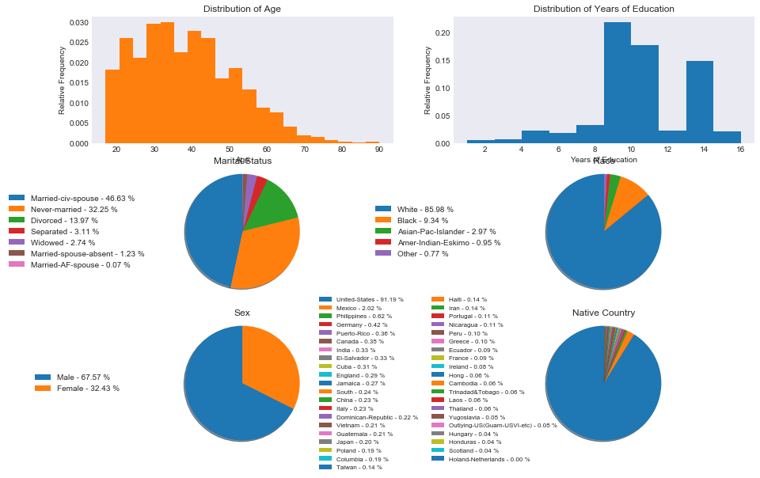

In [122]:
%matplotlib inline
import numpy as np
import pandas as pd
import matplotlib.pyplot as plt
import seaborn as sns
import shelve
import os
plt.style.use('seaborn-dark')
plt.rcParams['figure.figsize'] = (15, 10)
Cleaning the Data¶
In [20]:
adult = pd.read_csv("data/adult.csv")
adult.shape
Out[20]:
(32561, 15)
In [8]:
adult.head()
Out[8]:
| age | workclass | fnlwgt | education | education.num | marital.status | occupation | relationship | race | sex | capital.gain | capital.loss | hours.per.week | native.country | income | |
|---|---|---|---|---|---|---|---|---|---|---|---|---|---|---|---|
| 0 | 90 | ? | 77053 | HS-grad | 9 | Widowed | ? | Not-in-family | White | Female | 0 | 4356 | 40 | United-States | <=50K |
| 1 | 82 | Private | 132870 | HS-grad | 9 | Widowed | Exec-managerial | Not-in-family | White | Female | 0 | 4356 | 18 | United-States | <=50K |
| 2 | 66 | ? | 186061 | Some-college | 10 | Widowed | ? | Unmarried | Black | Female | 0 | 4356 | 40 | United-States | <=50K |
| 3 | 54 | Private | 140359 | 7th-8th | 4 | Divorced | Machine-op-inspct | Unmarried | White | Female | 0 | 3900 | 40 | United-States | <=50K |
| 4 | 41 | Private | 264663 | Some-college | 10 | Separated | Prof-specialty | Own-child | White | Female | 0 | 3900 | 40 | United-States | <=50K |
In [41]:
for column in adult.columns:
print("Unique Values in Column " + column)
print(adult[column].unique())
print("")
Unique Values in Column age
[90 82 66 54 41 34 38 74 68 45 52 32 51 46 57 22 37 29 61 21 33 49 23 59 60
63 53 44 43 71 48 73 67 40 50 42 39 55 47 31 58 62 36 72 78 83 26 70 27 35
81 65 25 28 56 69 20 30 24 64 75 19 77 80 18 17 76 79 88 84 85 86 87]
Unique Values in Column workclass
['?' 'Private' 'State-gov' 'Federal-gov' 'Self-emp-not-inc' 'Self-emp-inc'
'Local-gov' 'Without-pay' 'Never-worked']
Unique Values in Column fnlwgt
[ 77053 132870 186061 ..., 34066 84661 257302]
Unique Values in Column education
['HS-grad' 'Some-college' '7th-8th' '10th' 'Doctorate' 'Prof-school'
'Bachelors' 'Masters' '11th' 'Assoc-acdm' 'Assoc-voc' '1st-4th' '5th-6th'
'12th' '9th' 'Preschool']
Unique Values in Column education.num
[ 9 10 4 6 16 15 13 14 7 12 11 2 3 8 5 1]
Unique Values in Column marital.status
['Widowed' 'Divorced' 'Separated' 'Never-married' 'Married-civ-spouse'
'Married-spouse-absent' 'Married-AF-spouse']
Unique Values in Column occupation
['?' 'Exec-managerial' 'Machine-op-inspct' 'Prof-specialty' 'Other-service'
'Adm-clerical' 'Craft-repair' 'Transport-moving' 'Handlers-cleaners'
'Sales' 'Farming-fishing' 'Tech-support' 'Protective-serv' 'Armed-Forces'
'Priv-house-serv']
Unique Values in Column relationship
['Not-in-family' 'Unmarried' 'Own-child' 'Other-relative' 'Husband' 'Wife']
Unique Values in Column race
['White' 'Black' 'Asian-Pac-Islander' 'Other' 'Amer-Indian-Eskimo']
Unique Values in Column sex
['Female' 'Male']
Unique Values in Column capital.gain
[ 0 99999 41310 34095 27828 25236 25124 22040 20051 18481 15831 15024
15020 14344 14084 13550 11678 10605 10566 10520 9562 9386 8614 7978
7896 7688 7443 7430 7298 6849 6767 6723 6514 6497 6418 6360
6097 5721 5556 5455 5178 5060 5013 4934 4931 4865 4787 4687
4650 4508 4416 4386 4101 4064 3942 3908 3887 3818 3781 3674
3471 3464 3456 3432 3418 3411 3325 3273 3137 3103 2993 2977
2964 2961 2936 2907 2885 2829 2653 2635 2597 2580 2538 2463
2414 2407 2387 2354 2346 2329 2290 2228 2202 2176 2174 2105
2062 2050 2036 2009 1848 1831 1797 1639 1506 1471 1455 1424
1409 1173 1151 1111 1086 1055 991 914 594 401 114]
Unique Values in Column capital.loss
[4356 3900 3770 3683 3004 2824 2754 2603 2559 2547 2489 2472 2467 2457 2444
2415 2392 2377 2352 2339 2282 2267 2258 2246 2238 2231 2206 2205 2201 2179
2174 2163 2149 2129 2080 2057 2051 2042 2002 2001 1980 1977 1974 1944 1902
1887 1876 1848 1844 1825 1816 1762 1755 1741 1740 1735 1726 1721 1719 1672
1669 1668 1651 1648 1628 1617 1602 1594 1590 1579 1573 1564 1539 1504 1485
1411 1408 1380 1340 1258 1138 1092 974 880 810 653 625 419 323 213
155 0]
Unique Values in Column hours.per.week
[40 18 45 20 60 35 55 76 50 42 25 32 90 48 15 70 52 72 39 6 65 12 80 67 99
30 75 26 36 10 84 38 62 44 8 28 59 5 24 57 34 37 46 56 41 98 43 63 1 47
68 54 2 16 9 3 4 33 23 22 64 51 19 58 53 96 66 21 7 13 27 11 14 77 31
78 49 17 85 87 88 73 89 97 94 29 82 86 91 81 92 61 74 95]
Unique Values in Column native.country
['United-States' '?' 'Mexico' 'Greece' 'Vietnam' 'China' 'Taiwan' 'India'
'Philippines' 'Trinadad&Tobago' 'Canada' 'South' 'Holand-Netherlands'
'Puerto-Rico' 'Poland' 'Iran' 'England' 'Germany' 'Italy' 'Japan' 'Hong'
'Honduras' 'Cuba' 'Ireland' 'Cambodia' 'Peru' 'Nicaragua'
'Dominican-Republic' 'Haiti' 'El-Salvador' 'Hungary' 'Columbia'
'Guatemala' 'Jamaica' 'Ecuador' 'France' 'Yugoslavia' 'Scotland'
'Portugal' 'Laos' 'Thailand' 'Outlying-US(Guam-USVI-etc)']
Unique Values in Column income
['<=50K' '>50K']
There are missing values in workclass, occupation, and native country. There do no seem to be missing values (N/A) for the quantitative columns.
In [33]:
def get_missing_data_indices(df):
missing = []
for index, row in df.iterrows():
if any(row == "?"):
missing.append(index)
return np.array(missing)
In [37]:
def test_missing_indices():
row0 = [">", "", "!"]
row1 = ["3", "1", "?"]
row2 = ["?", "10", "hello"]
row3 = ["my", "name", "is"]
df = pd.DataFrame([row0, row1, row2, row3])
missing = get_missing_data_indices(df)
np.testing.assert_equal(missing, np.array([1, 2]))
test_missing_indices()
In [34]:
missing_ind = get_missing_data_indices(adult)
len(missing_ind)
Out[34]:
2399
In [52]:
clean_adult = adult.drop(missing_ind).reset_index(drop = True)
clean_adult.head()
Out[52]:
| age | workclass | fnlwgt | education | education.num | marital.status | occupation | relationship | race | sex | capital.gain | capital.loss | hours.per.week | native.country | income | |
|---|---|---|---|---|---|---|---|---|---|---|---|---|---|---|---|
| 0 | 82 | Private | 132870 | HS-grad | 9 | Widowed | Exec-managerial | Not-in-family | White | Female | 0 | 4356 | 18 | United-States | <=50K |
| 1 | 54 | Private | 140359 | 7th-8th | 4 | Divorced | Machine-op-inspct | Unmarried | White | Female | 0 | 3900 | 40 | United-States | <=50K |
| 2 | 41 | Private | 264663 | Some-college | 10 | Separated | Prof-specialty | Own-child | White | Female | 0 | 3900 | 40 | United-States | <=50K |
| 3 | 34 | Private | 216864 | HS-grad | 9 | Divorced | Other-service | Unmarried | White | Female | 0 | 3770 | 45 | United-States | <=50K |
| 4 | 38 | Private | 150601 | 10th | 6 | Separated | Adm-clerical | Unmarried | White | Male | 0 | 3770 | 40 | United-States | <=50K |
In [86]:
clean_adult["marital.status"].value_counts().values
Out[86]:
array([14065, 9726, 4214, 939, 827, 370, 21], dtype=int64)
In [125]:
fig, axes = plt.subplots(nrows=3, ncols=2)
ax1 = axes[0, 0]
ax1.hist(clean_adult["age"], normed = True, bins = 20)
ax1.set_title("Distribution of Age")
ax1.set_xlabel("Age")
ax1 = axes[0, 0]
ax1.hist(clean_adult["age"], normed = True, bins = 20)
ax1.set_title("Distribution of Age")
ax1.set_xlabel("Age")
ax1.set_ylabel("Relative Frequency")
ax2 = axes[0, 1]
ax2.hist(clean_adult["education.num"], normed = True)
ax2.set_title("Distribution of Years of Education")
ax2.set_xlabel("Years of Education")
ax2.set_ylabel("Relative Frequency")
ax3 = axes[1, 0]
counts = clean_adult["marital.status"].value_counts()
percents = 100 * counts.values/counts.values.sum()
patches, texts = ax3.pie(percents, shadow=True, startangle=90)
ax3.axis("equal")
labels = ['{0} - {1:1.2f} %'.format(i,j) for i,j in zip(counts.index, percents)]
ax3.legend(patches, labels, loc="center", bbox_to_anchor=(-0.05, 0.5),
fontsize=10)
ax3.set_title("Marital Status")
ax4 = axes[1, 1]
counts = clean_adult["race"].value_counts()
percents = 100 * counts.values/counts.values.sum()
patches, texts = ax4.pie(percents, shadow=True, startangle=90)
ax4.axis("equal")
labels = ['{0} - {1:1.2f} %'.format(i,j) for i,j in zip(counts.index, percents)]
ax4.legend(patches, labels, loc="center", bbox_to_anchor=(-0.05, 0.5),
fontsize=10)
ax4.set_title("Race")
ax5 = axes[2, 0]
counts = clean_adult["sex"].value_counts()
percents = 100 * counts.values/counts.values.sum()
patches, texts = ax5.pie(percents, shadow=True, startangle=90)
ax5.axis("equal")
labels = ['{0} - {1:1.2f} %'.format(i,j) for i,j in zip(counts.index, percents)]
ax5.legend(patches, labels, loc="center", bbox_to_anchor=(-0.05, 0.5),
fontsize=10)
ax5.set_title("Sex")
ax6 = axes[2, 1]
counts = clean_adult["native.country"].value_counts()
percents = 100 * counts.values/counts.values.sum()
patches, texts = ax6.pie(percents, shadow=True, startangle=90)
ax6.axis("equal")
labels = ['{0} - {1:1.2f} %'.format(i,j) for i,j in zip(counts.index, percents)]
ax6.legend(patches, labels, loc="center", ncol = 2, bbox_to_anchor=(-0.05, 0.5),
fontsize=8)
ax6.set_title("Native Country")
os.makedirs("fig", exist_ok=True)
fig.savefig("fig/columns.png")

In [124]:
os.makedirs("results", exist_ok=True) #Make results directory if it does not exist yet
clean_adult.to_hdf('results/df1.h5', 'clean_adult')
In [ ]: